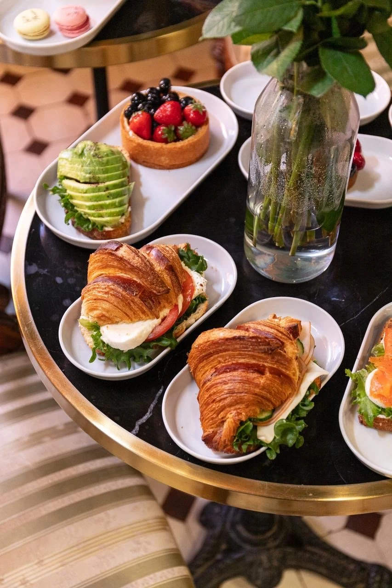

VoicroissanttiLehtevä kuori, rapeat reunat ja pehmeä sisus.

Makeaa ja suolaista
Jotain joka makuun.
Marjaisia torttuja, täytettyjä croissantteja ja muita kahvilan suosikkeja. Valikoimasta löytyy herkku niin makean kuin suolaisen nälkään.
Pâtisserie
Makeat
herkut.
Kultaisia ja herkkiä suosikkeja jokaiseen aamuun. Tutustu päivän valikoimaan kahvilan vitriinissä.
PistaasicroissanttiPähkinäinen vivahde ranskalaiseen leipomoklassikkoon.
MantelicroissanttiHienostunut mantelinen versio aamuherkusta.
Pain au chocolatVoitaikinainen leivonnainen ja suklaasydän.
SuklaaéclairRanskalaisen pâtisserien klassikkoherkku.
MacaronitPieniä värikkäitä suupaloja leivonnaistiskiltä.
Mille-feuilleHento, kerroksellinen ranskalainen leivonnainen.
Vegaaninen croissanttiKasvipohjainen leivonnainen.
VegaaninenVegaaniset macaronitKasvipohjaisia macaroneja päivän valikoiman mukaan.
VegaaninenEtsitkö kasvipohjaista vaihtoehtoa? Kysy päivän vegaanisista croissanteista ja macaroneista.
Le déjeuner
Suolaiset
herkut.
Kahvihetkestä voi tehdä hieman ruokaisamman. Kysy päivän suolaisista vaihtoehdoista tiskiltä.
Ranskalaiset voileivätTuoreita voileipiä nopealle lounaalle tai kiireettömään taukoon.
KanavoileivätTäyttävä kahvilasuosikki, tuoreena tarjolla.
Suolaiset éclairitSuolainen tulkinta ranskalaisesta leivonnaisklassikosta.
Juotavaa
Jotain
siemailtavaa.
Creman kruunaama espresso, maitoinen cappuccino tai lämmittävä kaakao. Istu alas ja viivy hetki.
Perinteinen espressoPieni ja klassinen kahvi.
CappuccinoEspressoa ja pehmeää maitovaahtoa.
KaakaoLämmin ja lempeä kahvilaherkku.
Ranskalaiset virvoitusjuomatKysy tiskiltä päivän viileistä juomista.